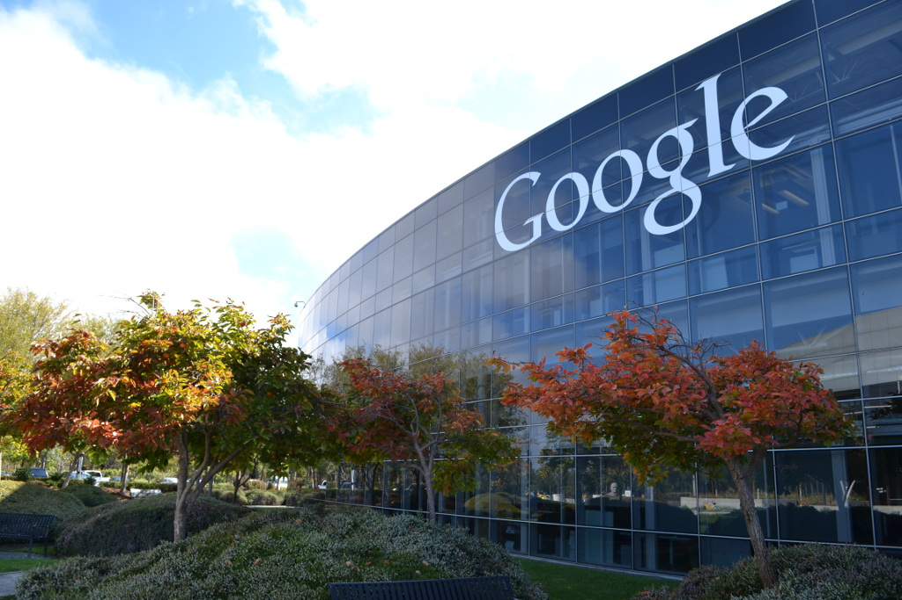

Indice
Infraestructura
Su infraestructura principal está compuesta por varios centros de datos que funcionan con la distribución RedHat del sistema operativo GNU/Linux, cuya elección fue llevada a cabo debido a la flexibilidad del mismo, por lo que la mayoría de sus trabajadores usan también esta misma distribución en sus estaciones de trabajo por comodidad.
Los cuatro edificios de la base, suman 47.038 m² (506.317 pies cuadrados), fueron arrendados originalmente por Google a principios de 2003. En junio de 2006, Google compró la propiedad a Silicon Graphics por 319 millones de dólares. Aunque los edificios son relativamente de baja altura, el complejo cubre una gran área. El interior de la sede está decorado con elementos como luces y sombras de bolas gigantes de goma. El vestíbulo contiene un piano y una proyección en directo de las actuales búsquedas de Google. Las instalaciones incluyen un gimnasio (Edificio 40), habitaciones de lavandería gratuita (edificios 40 y 42), dos pequeñas piscinas, una cancha de voleibol de arena, y más de una docena de cafeterías de diversa selección. Google ha instalado incluso réplicas de SpaceShipOne y un esqueleto de dinosaurio.
¿Que es Googleplex?
Googleplex es la sede de la compañía Google Inc, ubicada en 1600 Amphitheatre Parkway, en Mountain View, Santa Clara, California, cerca de San José. El nombre de Googleplex es un juego de palabras, al ser una combinación de las palabras Google y complex (complejo, en inglés), y a la vez una referencia a gúgolplex (googolplex en inglés), el nombre dado al número enorme . Hay también en el nombre una referencia a la obra de Douglas Adams, The Hitchhiker's Guide to the Galaxy, en la que se nombra, como uno de los mejores ordenadores del universo al Pensador de la Estrella Googleplexs. En Google, simboliza el objetivo de organizar una inmensa cantidad de información disponible en Internet.
Ubicación
Googleplex está situado entre el camino de Charleston, el Parkway de Amphitheatre, y el bulevar del litoral en Mountain View del norte, cerca de wetlands (el parque del litoral). Los empleados que viven en San Francisco o en la bahía del este pueden tomar una lanzadera subvencionada Google-wifi. Funciona con biodiésel nacionalmente crecido y procesado. Los famosos Vecinos de googleplex incluyen la plaza de ALZA y la fundación Mozilla al oeste; un Anfiteatro al norte; una Institución al Noreste, un complejo de la investigación de Silicon Valley de Microsoft Corporation, y el museo de la historia de la Computación al sur. El campo de Moffett cerca del este. Además de Googleplex, Google también tiene sedes en Argentina, Irlanda, Inglaterra, Brasil, Canadá, Colombia, Chile, México, España, Alemania, Suiza, Austria, Dinamarca, Francia, Italia, Holanda, Suecia, Australia, India y Japón.
Ubicación de Mountain View, California
Mountain View está situado en el extremo norte de la carretera 85, donde resuelve la carretera 101. Ese histórico "Camino Real" de la ruta también funciona con Mountain View. Mountain View limita en el noroeste con Palo Alto, en el sudoeste con Los Altos, en el sureste con Sunnyvale, y en el noreste con la bahía de San Francisco. Según la oficina de censo de Estados Unidos, la ciudad tiene un área total de 31.7 kilómetros cuadrados (12.2 millas cuadradas). 31.2 kilómetros cuadrados (12.1 millas cuadradas) de ella son tierra y 0.4 kilómetros cuadrados (0.2 millas cuadradas) de (1.39%) son agua.